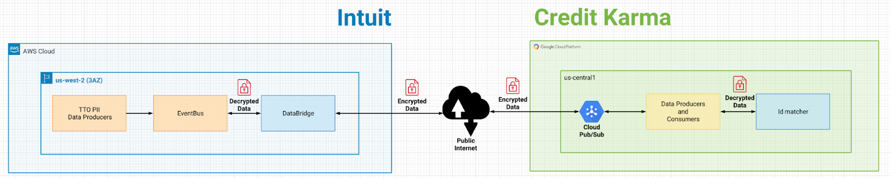

Adding a Connection
Overview
IDX Widgets use the "Adding a Connection” tool to connect users to their providers such as banks (Chase, Wells Fargo, or Citibank, etc.) or business providers, such as Amazon Business with a developer’s offering.
Steps to Add a Connection
Adding a connection allows the user to select their institution, enter their authentication details, and receive a success or failure message when complete. When entering their authentication details, users may also be prompted for two-factor authentication.
Step 1: Launch the Widget
- Consume the JSBundle. Note: This link will change in the future.
- Pass the appropriate configuration parameters. The IDX widget supports customization and configuration through the different properties sent as a part of fdpSettings properties. Typically, these are the key/value pairs that you send while initializing a widget. The following is an example:
<!-- Load javascript -->
<script type="text/javascript" src="[https://static-fdpwidgets.intuitcdn.net/fdp/widgets/assets/lib/fdpwidgets/0.1.1/fdpwidgets.min.js](https://static-fdpwidgets.intuitcdn.net/fdp/widgets/assets/lib/fdpwidgets/0.1.1/fdpwidgets.min.js)">
</script>
<!-- //src url is TBD -->
<script type="text/javascript">
//Set props - actual values TBD
const props = {
offeringId: 'com.creditkarma',
apiKey: '123456api-asProvided',
accessToken: 'accesstoken received from id federation'
intents: ['liabilities'],
intentFilter: {
accountFilter: {
account Subtypes: [‘CREDITCARD’]
}
},
flowName: 'fdp/addConnection',
is7216: false,
environment: 'e2e,
onEvent: function({eventName, eventData}) {
//handle event
},
onError: function({errorName, errorData}) {
//handle error
}
}
// When ready to launch invoke following IntuitFDX.launch(props).render(‘.app’)
</script>
| Property Name | Usage | Type | Req |
|---|---|---|---|
| apiKey | Sets the BrowserAuth API key used for all API calls to the fdx application service. You get this by onboarding to the "FDX Application Service" in the Services Portal as a WebBrowser client. This is a mandatory property. | string | Yes |
| offeringId | Set the offering Id | string | No |
| enableEscapeRoute | Globally enables the presence of escape routes in the widgets on auth screens | boolean | No |
| enableFeatures | Enables available features for the flow | array | No |
| oauthProductName | Set the oauth product name. This prop is required if the oauth feature is enabled. | string | Yes |
| theme | Sets the theme for fdp widget. Available options: mint, sbg2, turbo, ctg | string | No |
| setProductSupportUrl | In certain error scenarios, provide a link to a separate support site to be popped open in another tab. Defaults to https://www.intuit.com/support/ | string | No |
| productName | Sets the product name used in analytics events. | string | No |
| tokenOverrides | Used to override default widget text. Note: overriding will affect localization and styling. | object | No |
| searchResultsFilter | Used to filter a particular provider from provider search recommendations. Format : "NOT id.orig_doc_id: PROVIDER ID" | string | No |
Step 2: Handling the callback
As part of onEvent callback, the widget returns the "onConnectSuccess" event, when a connection is successful. The callback response looks like this:
{
"correlationId": "e1b25b4b-f0ba-4029-a4ff-641c03ed0fc7",
"accounts": [{
"id": "urn:account:fdp::accountid:220e44e3-3e48-11eb-b6c7-76b7493295df",
"type": "LINEOFCREDIT",
"subtype": "CREDITCARD",
"displayInfo": {
"nickname": "Master Card 2222",
"displayName": "Master2222",
"accountNumberDisplay": "XXXX2222"
}
}],
"providerDetail": {
"name": "NI Bank For Agg Modernization",
"logos": [{
"uri": "https://financialprovider-e2e-logos.platform.intuit.com/v1/logos/3963f676-77e0-4359-a0b4-2c2b45d6af45?logo_requester=8937411052706320865",
"height": 24,
"width": 220,
"resolution": "low"
},
{
"uri": "https://financialprovider-e2e-logos.platform.intuit.com/v1/logos/7e26de69-e195-4691-a2e0-56c3c4ebd48e?logo_requester=8937411052706320865",
"height": 209,
"width": 558,
"resolution": "low"
}
]
}
}
If an error occurs, the Widget displays an error message and sends the onError callback with the error details.
Step 3: Listening to Databridge Events
The data bridge allows the secure transfer of data between IDX and external partners. The data bridge - Performs application level data encryption - Publishes data to specific location for external consumption - Can filter JSON data attributes
The Data Bridge can accept data from any Event Bus kafka topic. 